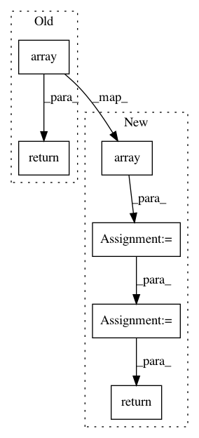

0110937ab04f4298f98963bed1de08962d776b24,src/fonduer/utils/data_model_utils/structural.py,,lowest_common_ancestor_depth,#,187
Before Change
span1 = _to_span(c[0])
span2 = _to_span(c[1])
ancestor1 = np.array(span1.sentence.xpath.split("/"))
ancestor2 = np.array(span2.sentence.xpath.split("/"))
min_len = min(ancestor1.size, ancestor2.size)
return min_len - np.argmin(ancestor1[:min_len] == ancestor2[:min_len])
After Change
:param c: The multinary-Mention Candidate to evaluate
spans = [_to_span(i) for i in c]
ancestors = [np.array(span.sentence.xpath.split("/")) for span in spans]
min_len = min([a.size for a in ancestors])
arrays = np.array([a[:min_len] for a in ancestors])
arg_min = np.argmin(arrays[:-1] == arrays[1:], axis=1)
val = np.min(arg_min[np.nonzero(arg_min)])
return min_len - val
In pattern: SUPERPATTERN
Frequency: 4
Non-data size: 6
Instances
Project Name: HazyResearch/fonduer
Commit Name: 0110937ab04f4298f98963bed1de08962d776b24
Time: 2020-07-01
Author: wajdikhattel@think-it.io
File Name: src/fonduer/utils/data_model_utils/structural.py
Class Name:
Method Name: lowest_common_ancestor_depth
Project Name: luispedro/mahotas
Commit Name: 8c75fd91577f0853b427f8f295badfefade31822
Time: 2015-02-15
Author: luis@luispedro.org
File Name: mahotas/features/texture.py
Class Name:
Method Name: haralick_features
Project Name: Shmuma/ptan
Commit Name: eb9216ceb28aa2f96877c908ad6b2fc7b8c552f7
Time: 2018-01-23
Author: max.lapan@gmail.com
File Name: ptan/agent.py
Class Name:
Method Name: float32_preprocessor
Project Name: nilearn/nilearn
Commit Name: 047b145b473f4406cd99d5f04e454af6213bbcc3
Time: 2017-04-21
Author: salmabougacha@hotmail.com
File Name: nilearn/connectome/connectivity_matrices.py
Class Name: ConnectivityMeasure
Method Name: transform